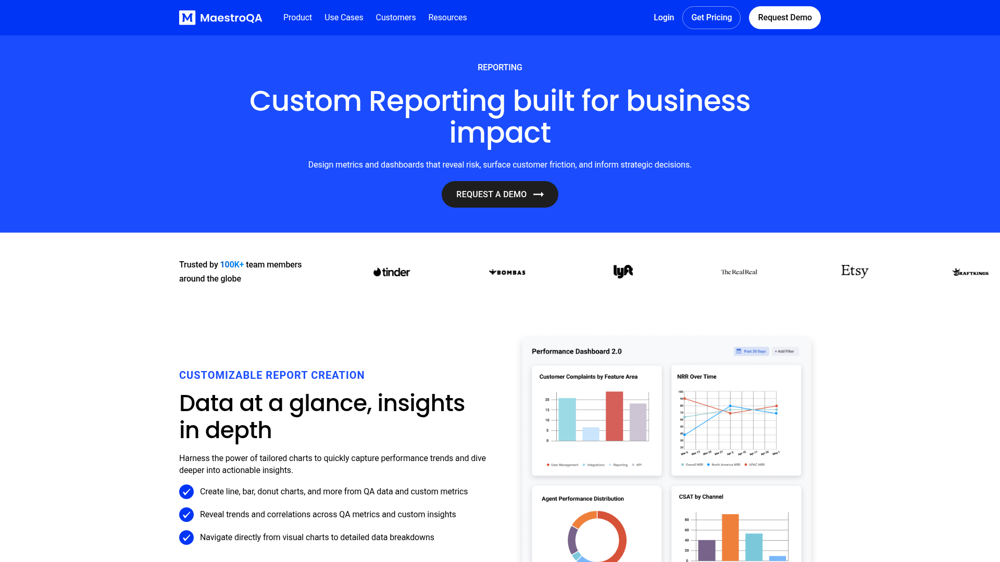

Главное улучшение: сделать один главный тренд операционным. Не добавлять еще графики, а показать статус улучшения или снижения, цель 90 баллов и точечные подсказки по каждому дню.
Current State
Текущий экран уже плотный и рабочий, но тренд читается как статичная линия без контекста и интерактивных подписей.
Improvement Ideas
1. Trend verdict above chart
Под крупной средней оценкой нужен явный verdict: улучшение, снижение или без изменений. Это решает вопрос "стало лучше или хуже" до чтения графика.

MaestroQA показывает reporting как инструмент для трендов, cohort insights и drilldown. Паттерн переносится как "главный вывод сначала". [Lazyweb]
Score 76
[↗ Качество улучшилось] +4 п. к прошлому периоду
[23 проверки] [прошлый период: 72] [тренд устойчив]
2. Point tooltips and target context
Каждая точка графика должна открывать день, оценку, объем и движение к предыдущей точке. Пунктир цели стоит подписать прямо на графике.
Intercom reporting делает акцент на готовых reports и быстрых insights через интерактивные visualizations. [Lazyweb]
tooltip:
12.05
84 балла
4 проверки, +6 п. к предыдущей точке
3. Replace duplicate trend with trend signals
Один и тот же sparkline не должен повторяться в Overview. Второй блок лучше сделать как список сигналов: последняя точка, минимум, самое сильное движение, расстояние до цели.
Сигналы тренда
Последняя точка 76 баллов
Минимум периода 54 балла
Самое сильное движение -8 п.
What's Working
Существующая структура с command bar, summary, primary KPI и tabs хороша для QA lead/admin сценария. Ее стоит сохранить, улучшая только читаемость движения и drilldown.
All References
MaestroQA reporting, QA analytics category.Intercom helpdesk reporting, support analytics category.